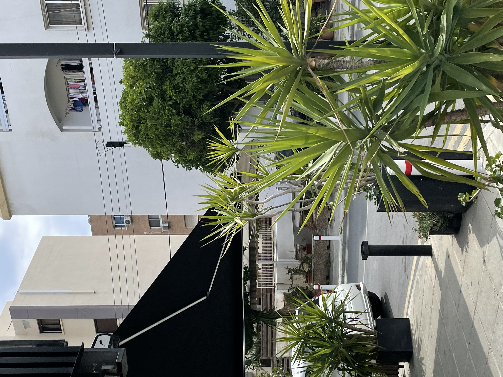
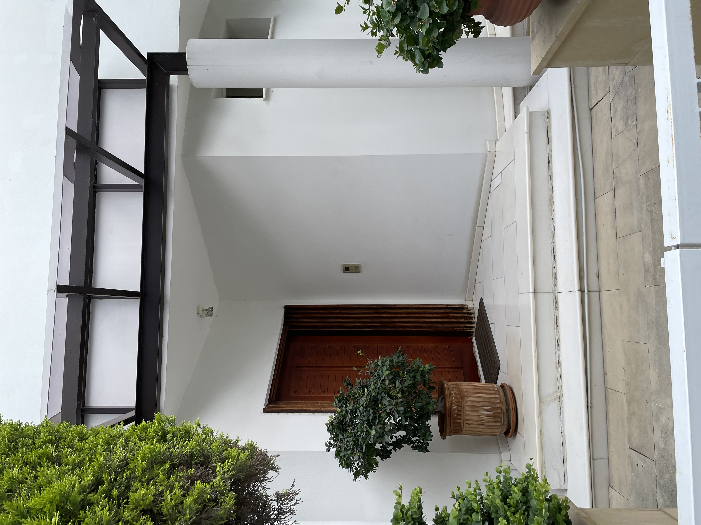
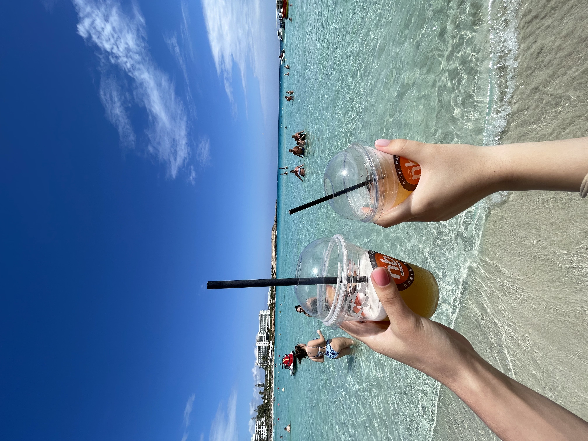
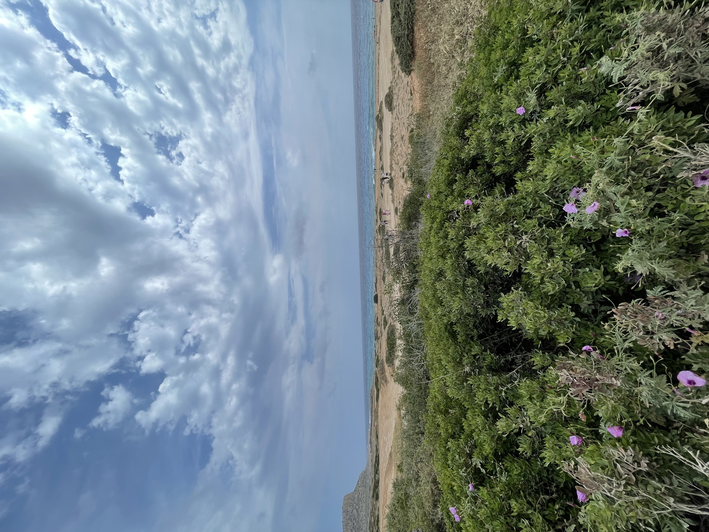
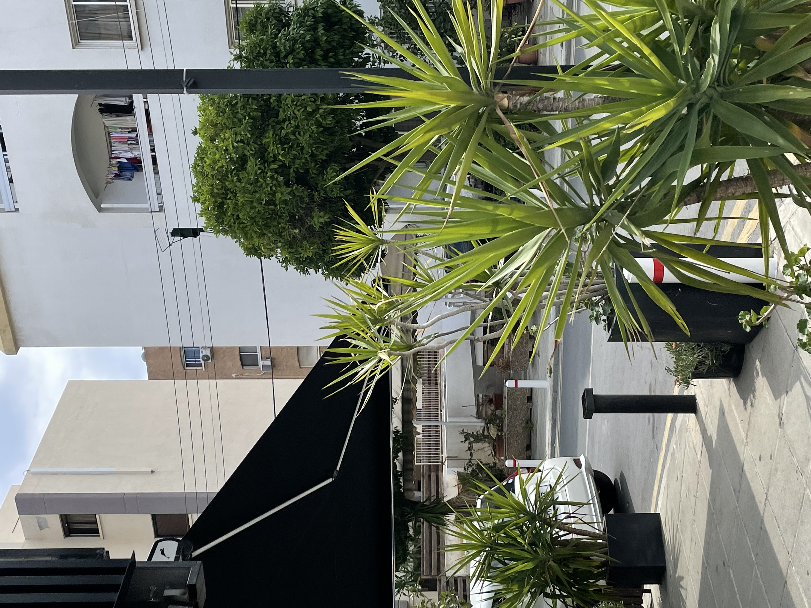
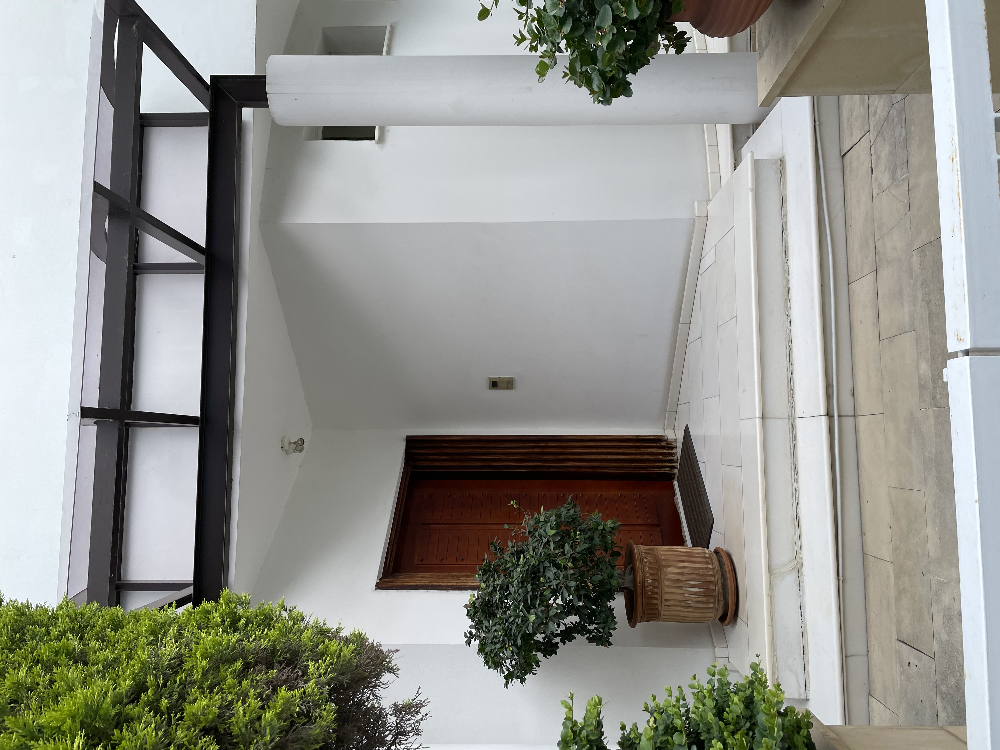
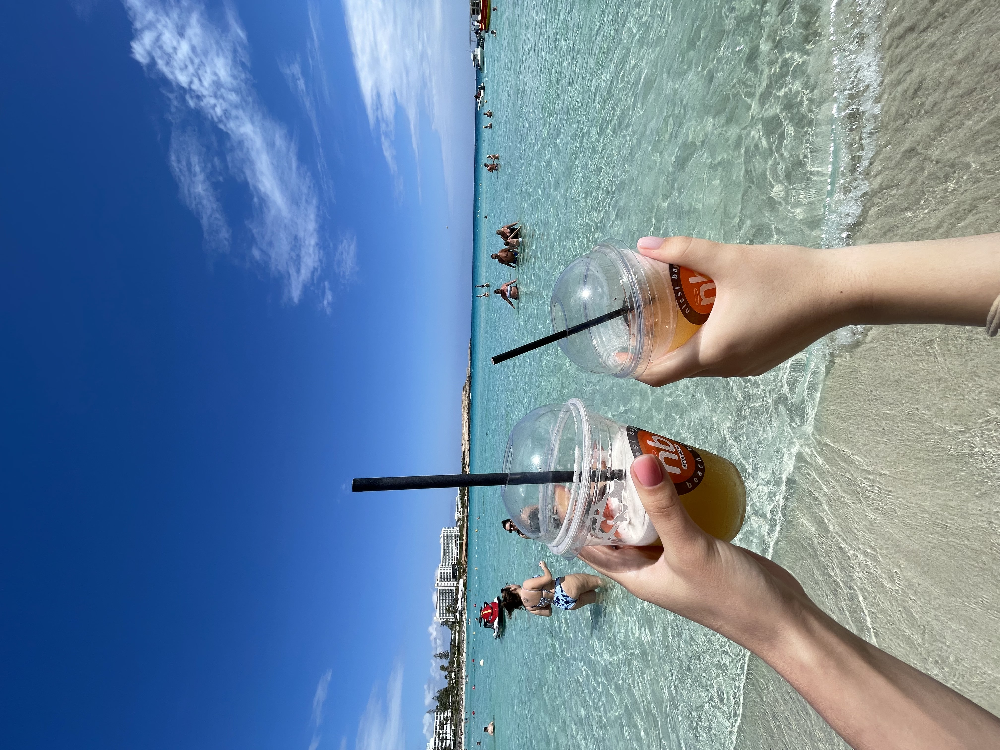
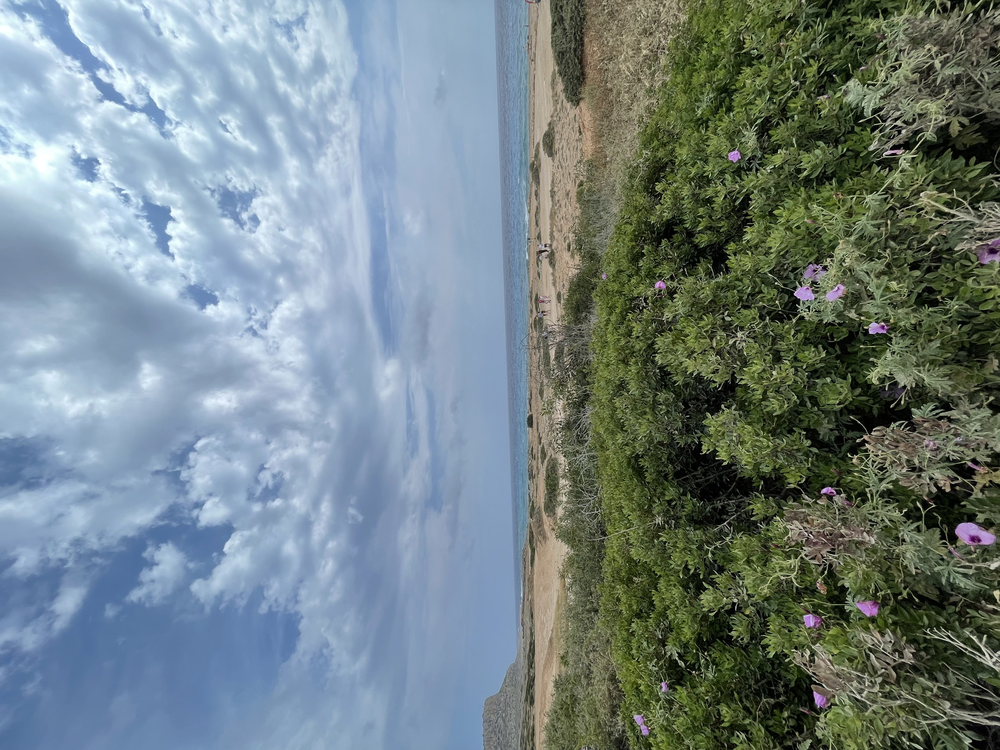

London is the capital and largest city of England and the United Kingdom, with a population of just under 9 million. London exerts a strong influence on its arts, entertainment, fashion, commerce and finance, education, health care, media, science and technology, tourism, and transport and communications.
Ayia Napa is a tourist resort at the far eastern end of the southern coast of Cyprus. The resort has 27 beaches, of which 14 have been awarded the Blue Flag award, more than any other resort in Cyprus. In 2011, Nissi Beach topped the TripAdvisor list of the best beaches in Europe. In 2017, Makronissos Beach was chosen by Travel Weekly as the third best beach for Cyprus and Greece. In 2018, it was announced that Nissi Beach ranked third in the list of the most popular beaches on Instagram.
    
   